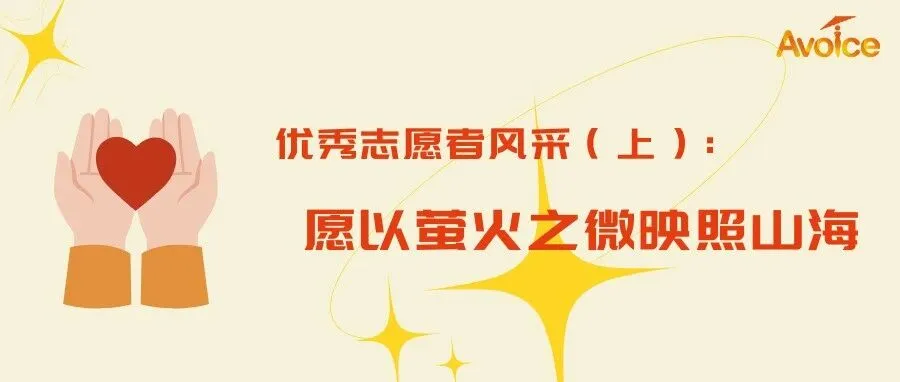
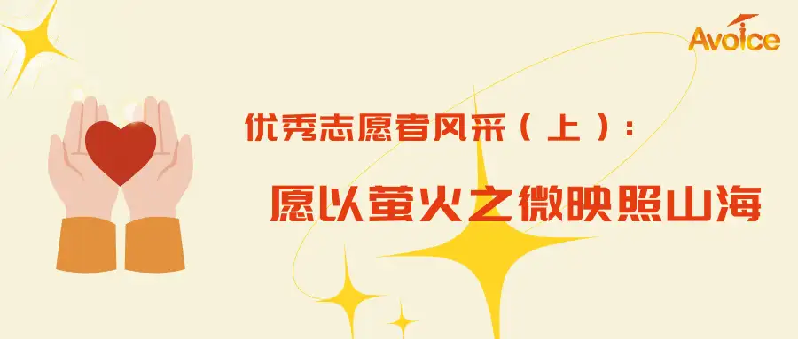
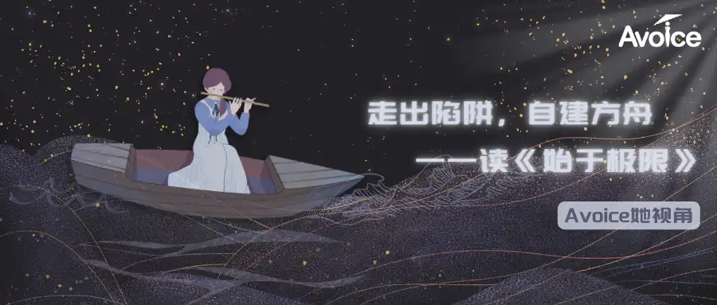
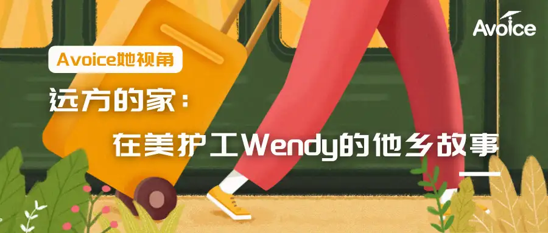

✦
女性权益保护并非一日之功，也非一人所能成。在AWDPI，有许许多多从涓滴小事做起的脚踏实地的志愿者，Ta们或发挥自己的专长，或一点一点探索自己并不熟悉的领域，来为身边的或遥远的女性做出贡献、带来改变。
“淋过雨而想为她人撑伞”是许多志愿者参与女性保护工作的动机，然而触动可以由转述生发，同理心让我们感知Ta人的痛苦，我们不一定要有相似的经历而相聚同行，但听见彼此的哭声让我们惺惺相惜，更有众多的志愿者，虽未身陷囹圄，而心系遥远的哭声，渴望为处于黑暗中的人带来哪怕一星一点的光亮。让我们走近这些微小而伟大的志愿者，了解Ta们与女性保护的故事，看看每一把伞的背后，是怎样让人动容的面孔。
✦
✦

人力资源部 周文心
就读于金融专业，周文心一直热衷于公益事业的参与。支教、社会工作、社会服务等多项公益活动中，都留下过她忙碌的身影。
在2022年8月加入员工关系团队后，周文心主要负责成员的入离职与转岗工作，后来又转至绩效管理团队，担任团队负责人，负责工时打卡、证明开具、优秀志愿者提名等志愿者激励相关工作，也参与过 Project Thriven志愿者激励项目。她最大的收获也是管理岗位的经验。从员工关系到绩效管理，她对飞书系统一步步熟悉起来，逐渐能够熟练操作手续办理和表格自动化，也慢慢从培训参与者变成培训授课人。
周文心觉得女性组织的意义不在于做出惊世骇俗的大事，能让女性被发现被重视，本身就很有意义。对于女性保护组织与女性权益的未来，她也有自己独特的见解与期望。“随着人们对女性群体的重视和平权意识的提高，我们也终将靠近真正的女性主义。目前有部分人对女性主义抱有一定的偏见，甚至有人对性别议题感到不满，这让一些女性耻于承认自己是女权主义者。”周文心希望未来更多人能够接触到专业的科普，意识到女性主义并非偏激的时尚，而是真正的平权。
比利时国家办公室 Weiwei Miao缪炜玮
2007年大学毕业后，Weiwei做过老师，也在设计院做过市场营销，2016年开始在欧洲生活。Weiwei有女性长辈有遭受家暴的经历，而上一辈对于家暴的处理方式令她震惊而失望，这让她有了加入反家暴公益组织的想法。一次在朋友圈看到AWDPI志愿者的招募消息，Weiwei投递了报名表，加入了AWDPI。
Weiwei是宣传处和比利时项目合作团队的成员。她组织过社会融入课、传单宣传、线下见面会和在线讲座等一系列活动。在志愿者工作中，她遇到了许多挑战瞬间。一项项工作的完成也让她对于未来有了更加清晰的认识。
在Weiwei看来，志愿者于女性保护组织而言是可以燎原的星星之火，“女性保护组织发展和女性权益保护任重而道远，吾将上下而求索”是她对未来的展望，她也始终坚信，将自己的能量传递出去，就能得到更多能量的回报。
宣传处 Kylan王梓
Kylan毕业于国内的艺术院校，从事品牌设计的他，日常工作和AWDPI宣传处的工作内容重合度较高，这也让他在志愿工作参与中更加如鱼得水。
Kylan是一位有想法、有情怀的设计师，然而毕业以后，他发现大多设计师都倾向于产出具有较高商业价值、高报酬的设计方案，具有社会价值的设计项目却往往无人问津，而 Kylan更想追求的是设计产生的社会价值与影响力。
在AWDPI中，Kylan担任平面设计师的角色，负责过公众号版头动图、公众号版尾和2023年的新年红包设计，也参与了2023年全球女性创意峰会的主视觉与周边设计、2023年的1125活动主视觉、2024年的新年海报以及2024年妇女节活动的主视觉设计等。其中令他印象最深刻的是2023年1125活动主视觉的设计，那是他第一次使用AI来制作活动的主视觉，Kylan意识到 AI的出现与应用对于NGO等社会组织是一种极大的赋能，可以提高各社会组织妥善运用视觉传播的可能性。Kylan记得，当时在MidJourney中一边学习、一边尝试，试了三天，设计才开始出现一些眉目，在日常的设计工作中，他不会有这么高自由度的尝试与探索的机会，这让Kylan感到很兴奋，而且能把图像生成和社会价值结合起来也是一件很棒的事情。
宣传处 孙羽欣
羽欣是一名刚工作不久的内容营销策划。大学期间，她在朋友圈接触到了Avoice的相关资讯，渴望投身志愿工作、关怀社会弱势群体的她加入了Avoice，自此已有四年时间。见证着Avoice转型成为AWDPI，她与志愿者们一起肩负着为女性建立爱与和平的世界的使命。
羽欣在AWDPI的宣传处设计小组担任负责人，一些传播活动的视觉物料都是由羽欣和小组成员们负责的。每次大家都很捧场，做出来的物料也能让人感到号召力和女性力量，这给了羽欣满满的成就感。但实践过程中也有挑战，比如如何平衡工作和志愿者活动的时间。然而，当动机与愿望足够强烈时，想做的事情怎样都能觅得解法。
“我们的志愿者都非常有责任感和使命感。我们能够为这些受到亲密关系伤害的女性提供一个安全的空间，提供实质性的帮助，是非常厉害的。”身处这样的组织让羽欣有许多感动的瞬间，而更多的是关于思维的探索与反思。“我反思自己过去可能只是想象中的女性主义，所以现在我常常会问自己：是不是真的在乎这个问题？真的在乎问题才能去解决问题。一定不要忘记我们拥有共同的vision。”
宣传处 杜婉婷
婉婷是华中师范大学新闻传播学院在读的一名大三学生，在2023年春天加入AWDPI。她常常在社交媒体上浏览到到关于情感纠纷或家庭暴力的内容，在专业解决情感纠纷的法律博主评论区，经常会出现大量女性被家暴的残忍血腥的图片，它们将被家暴女性身体和心理的伤疤与瘢痕展示在每一个人眼前。直观的图片让婉婷感受到家庭暴力对女性带来的巨大伤害，也对她们的无力与无助感到深深地心疼。 因为不想看到这种事件祸及越来越多的女性，这个热爱画画与设计的女孩毫不犹豫地加入了AWDPI宣传处的公众号团队，希望能用自己的专业特长和爱好，来为女性保护贡献自己的力量。
婉婷是传播部-宣传处-公众号团队的成员，热爱画画与设计的她喜欢在工作中探索Cavans和秀米的有趣功能，也享受细细考虑如何排版才能使推文最美观的过程。每次看到自己制作的封面被用在AWDPI的推文中，婉婷都觉得自己切实为女性保护事业做出了一些贡献，非常有成就感。在岗位工作外，婉婷也收获了很多：在日常组织动向中，她了解到了非常多的女性保护相关的内容与动态。每次排版工作前，她都会阅读大量女性保护知识相关的推文作为参考，因此学习到了之前未接触过的女性保护相关法律知识、了解了世界范围内的女性保护工作，极大地增进了对女性保护工作的了解。
“希望能够推动全球的女性保护事业更上一层阶梯，唤起更多人的关注和意识；
希望能够帮助全球遭受过家庭暴力或不公平对待的女性脱离苦海，重获新生和自由，获得自己的光明；
希望女性主义不再只是一句被打上标签的口号；
希望全世界范围内的女性权益保护都能切实落地。”
婉婷相信，每一份微小的贡献汇聚在一起，就能产生非常强大的能量。她也始终坚定热爱、不负选择，不断突破着、收获着、奉献着。
宣传处 游舸
游舸是北京的一名大三学生，2021年加入AWDPI时，她正结束短暂的GAP期，尝试回归生活轨道。人们往往会局限在个人视角，始终聚焦于自己的生活。在志愿工作中，游舸能有机会暂时跳出个人视角的叙事内容，去聆听别人的故事。把自己从相对闭塞的环境中强行扯出来，从个人生活走到和社会接壤的区域，看到不一样的世界，做一些能实际帮助女性的事，这是游舸送给自己的成人礼。
在2021年，游舸以公众号编辑团队成员的身份加入AWDPI，她喜欢尽全力完成每一个或大或小的任务。“在AWDPI这样一个包容的组织里，只要愿意学习、愿意付出时间，每个人都会被给予充分的尊重、信任和成长的时间。”游舸就在这种温暖包容的环境中慢慢成长为公众号团队的负责人。
游舸的主要工作内容是公众号宣发推文的设计，接触到了一些全新的领域，她在工作中慢慢学习，提升了自己的各种技能。她参与了2023年AWDPI亚裔女性国际发展论坛的宣发推文设计和制作的全流程，作为学生，尤其是在期末季，她需要平衡学习和工作的时间分配。虽然常常需要熬夜工作，但现在回看2023年AWDPI亚裔女性国际发展论坛的一系列宣发推文，她认为一切付出都是值得的。
负责人刘锋对游舸给出了很高的评价：“带领公众号团队承担了机构传播的核心输出重任，游走于各个部门之间，将收集到的每一篇采写文章、研究报告、文献月刊以及各类活动宣传都安排得井井有条，让很多人因为公众号而认识了解AWDPI，也让很多女性通过公众号找到了获取支持的途径。”
宣传处 罗菲


罗菲制作过的封面
罗菲是心理学专业研二的在读学生。受导师影响，她很关注性与性别研究领域。除了分享专业资料外，导师还会常常分享公益组织的活动推文，罗菲就是这样认识了AWDPI。
正是因为通过导师的推文分享才接触到AWDPI，这让罗菲意识到，“传播”是一件非常重要的事，否则人们不知要何时才能了解到这个组织。因此在志愿者招募时，罗菲号召同样关注女性保护的同门，一起加入了AWDPI，并毫不犹豫地选择了公众号团队作为第一志愿。
罗菲在2023年5月份加入公众号团队，主要负责封面制作和推文排版工作，目前参与的工作主要有她视角月报、文章编译推文等。
她认为，传播是一件非常有价值的事，在当前阶段它不需要太大的人力和资金成本，但却能让关注到AWDPI的每个人都了解当前的女性保护工作进展，只有人们都了解到家庭暴力的存在，人们才会意识到，家庭暴力不仅仅是伴侣间发生的矛盾，还包括脱离伴侣关系外的、通过肢体、利器、语言等形式对人造成的实质性伤害。只有人们有了这种意识，Ta们才会有下一步行动去制止这个行为，去保护受害者。
对于女性权益，罗菲最大的期望是“在未来，我们能够不再谈女性权益、女性保护，希望能达到真正的平等。”，也希望能看到像AWDPI这样的女性保护组织百花齐放，从一个具体的落脚点出发，如家庭暴力，在发展中融入更多女性权益相关的话题。除此之外，也要看到儿童性教育、儿童受侵害等相关话题和角度。
一直在路上，永远留有对痛苦与不公的感知力，永远保持内心的温柔与行动的坚定，永远不满足于现状与功劳簿，永远期待着更美好的明天，是Ta们的共同点，也是AWDPI志愿者的群像素描。
采访｜周文心，杨艺，张思涵
撰稿｜欧阳印涵
审核｜秦科
排版/封面｜王佳怡